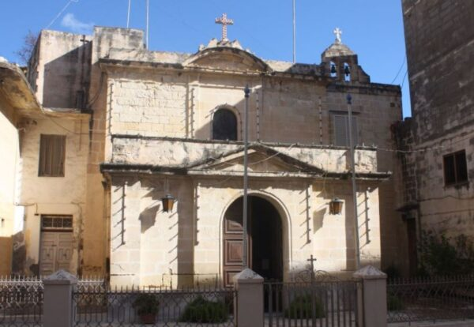
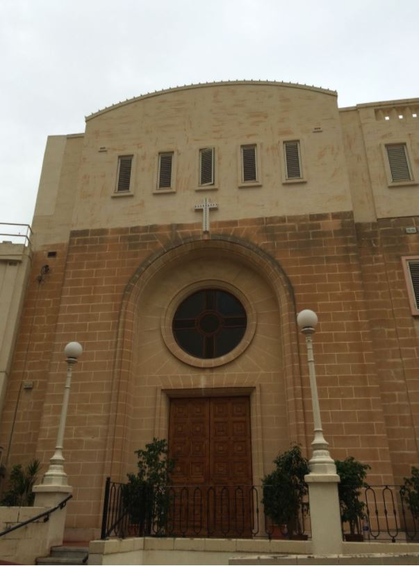

Knejjes u Kappelli
Tagħrif dwar knejjes u kappelli oħra li jinsabu fil-Parroċċa tal-Imsida.

Knisja tal-Kunċizzjoni
Il-knisja hi antika ħafna u hi knisja troġloditika, jiġifieri knisja f’għar. Skont Mons. Dusina kienet dedikata lill-Madonna tas-Sokkors. Fl-1640 inbniet mill-ġdid il-parti tal-knisja li tinsab barra mill-għar, u fl-1670 żdiditilha sagristija.
Fl-1835 l-Imsida saret viċi-parroċċa u fl-1867, meta l-Imsida saret parroċċa, il-Knisja tal-Kunċizzjoni saret il-knisja parrokkjali sakemm inbniet il-Knisja ta’ San Ġużepp.

Knisja tas-Sorijiet Franġiskani
Fl-1961 is-Sorijiet Franġiskani tal-Qalb ta’ Ġesù fetħu skola fl-Imsida, u l-kappella tal-iskola nfetħet ukoll għan-nies tal-lokalità.
Faċilitajiet
Arja Kundizzjonata · Kids’ Room

Kappella tal-Università
L-ewwel ġebla tal-Kappella tal-Università tqiegħdet fl-1977. Il-kappella nbniet mill-Knisja f’Malta bħala Ċentru Pastorali għall-ħidma mal-istudenti.
F’din il-kappella jistgħu jsiru
Żwiġijiet
Faċilitajiet
Arja Kundizzjonata
Rettur
P. Patrick Magro S.J.
Kuntatt
2340 2341
Kappella taċ-Ċentru
Il-Kappella taċ-Ċentru toffri spazju għat-talb u l-adorazzjoni matul il-ġimgħa.